Industrial design · User testing · CMF · Physical prototyping
Zine Waller
A lit wall display that lets magazines be seen instead of stacked
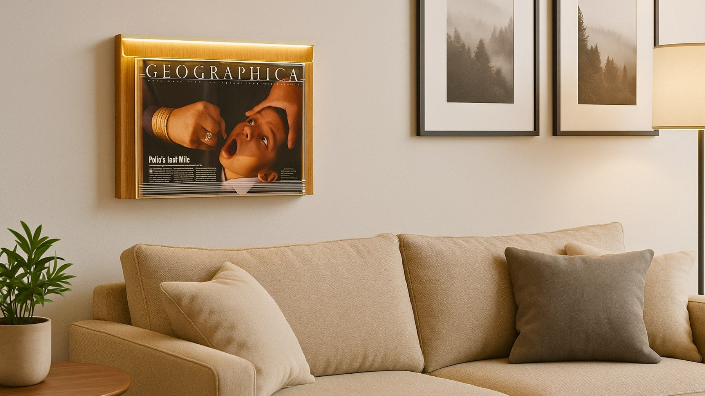
The problem
Magazines and small-format books usually end up stacked and visually lost. You see the spine, maybe the cover, but rarely the content. Homes have display space for photos and art, but nothing made for meaningful printed material.
My role
I worked alone on this, from research and ideation through user testing, CAD, materials and the final physical model.
Process
Research three opportunity spaces
I started by mapping three categories: bathroom cleaning, storage in shared and small spaces, and home composting. I captured observations and goals on affinity boards (“the swap should be easy with one hand in 30 seconds”), then sketched 20 ideas and built quick concept models for each direction before choosing storage.
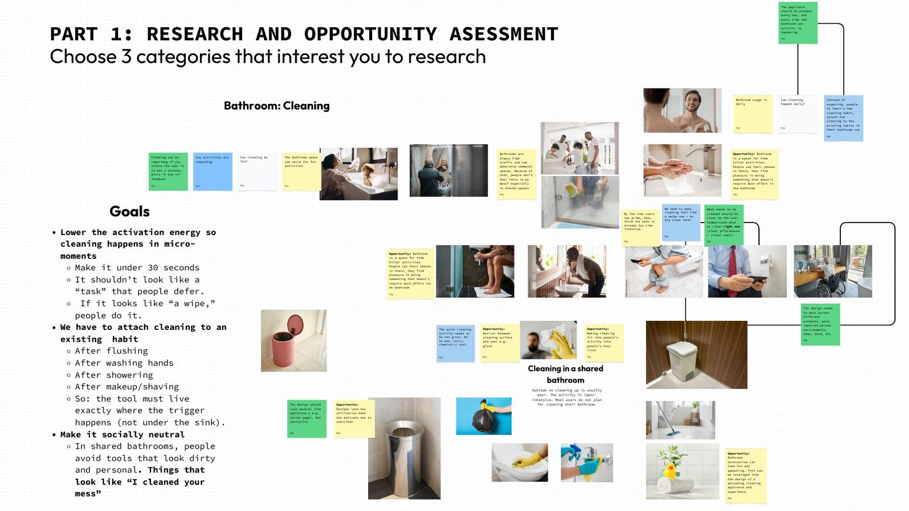
Research and opportunity assessment board 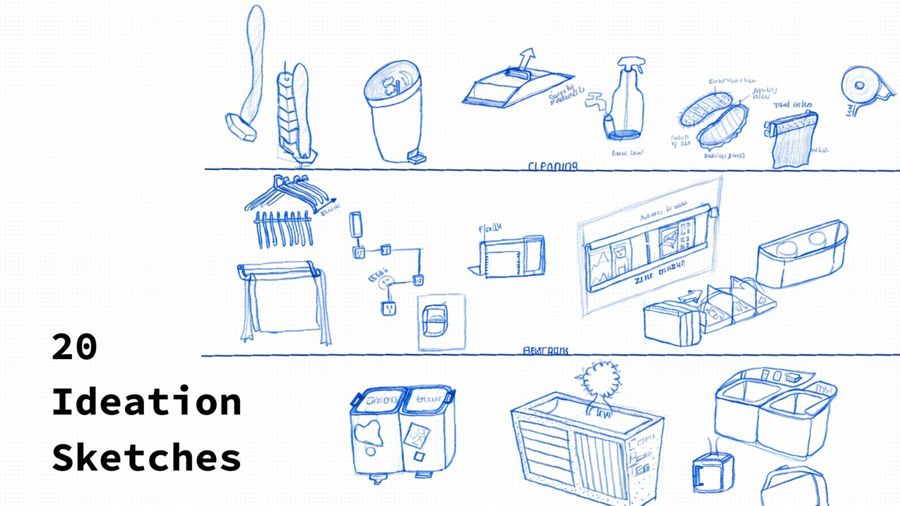
20 ideation sketches across three categories 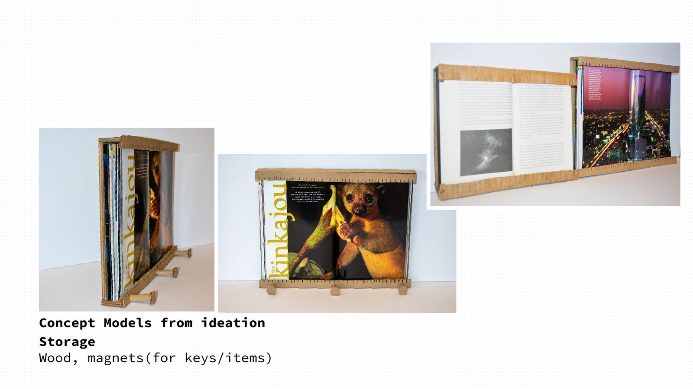
Concept models for the storage direction Iterate the form, and the fun
Precedents like acrylic wall holders and transparent display cases showed that a flat, front-facing magazine is far more visible. Early variations swung between over-engineered and too paper-specific. One iteration added a motion sensor so the display lights up and “opens its eyes” when someone walks by.
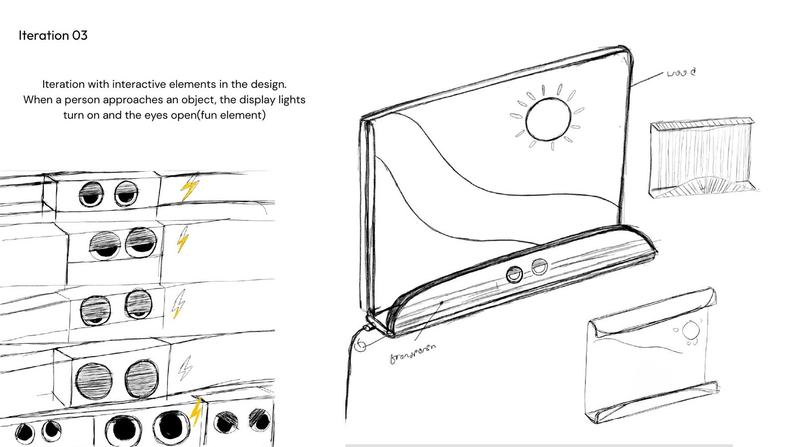
Iteration 03: an interactive version with sensor-triggered lights 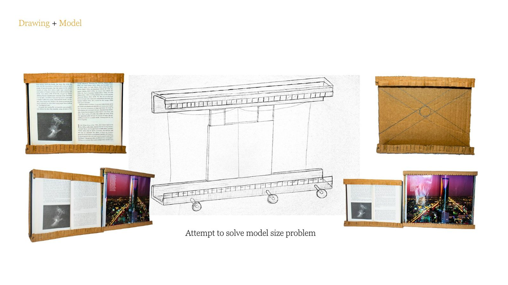
Drawing and proportion model Test with people, then change the design
I put a proportion model in people’s hands. Two comments reshaped the product. “Inserting from the bottom is kind of uncomfortable,” so I moved insertion to the top. “I still don’t know how to use it,” so I added a curvature that signals “place the magazine here.”
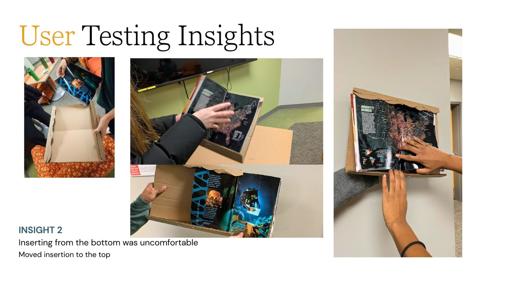
Insight: bottom insertion was uncomfortable, so it moved to the top 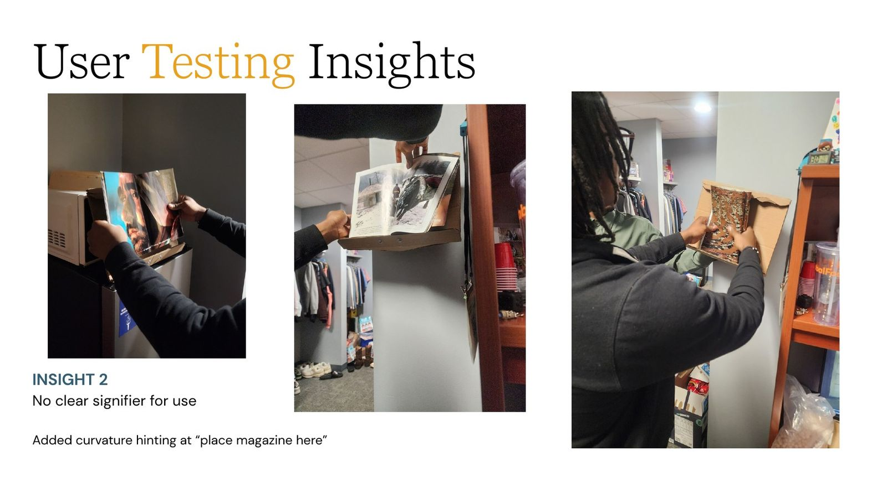
Insight: no clear signifier, so a guiding curvature was added Choose materials for warmth and light
Ash wood brings warmth, clear acrylic carries and diffuses the light, and TPU gives a flexible hinge. I compared pale birch, warm oak and light ash finishes, then documented the final form in a 1:2 technical drawing and an exploded assembly.
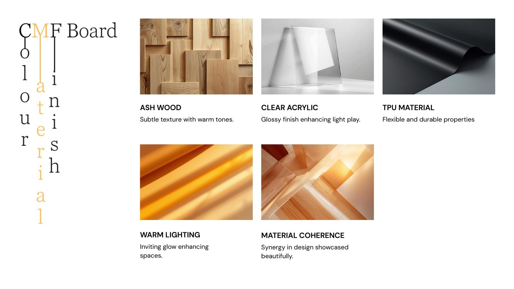
Color, material and finish board 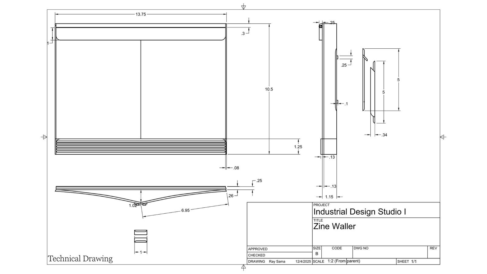
Technical drawing 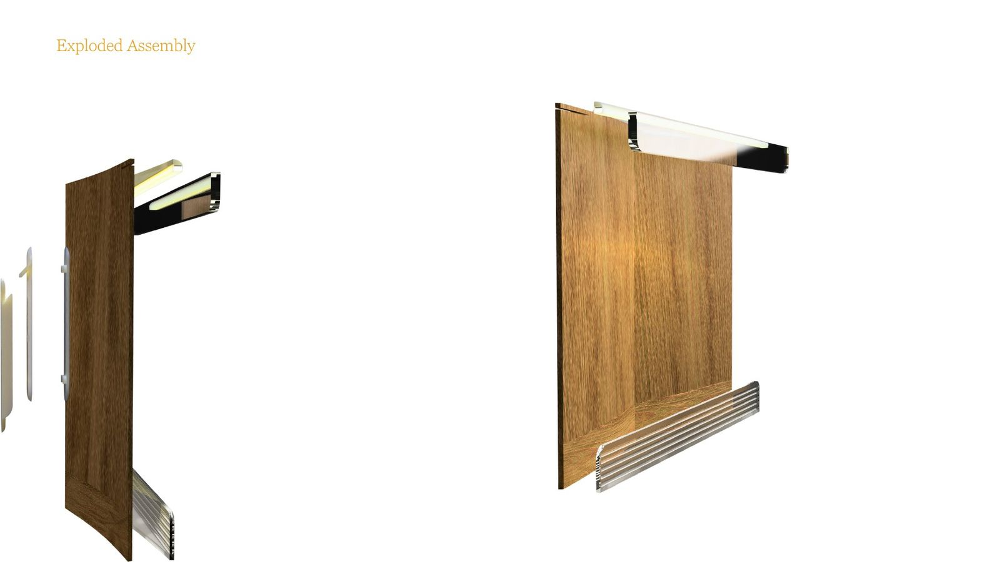
Exploded assembly Build the real thing
The physical model combines a laser-cut floor and ceiling, a 3D-printed body and an LED insert, trimmed and tested. I separately tested the TPU hinge as a flexible mechanism and the acrylic’s light diffusion.
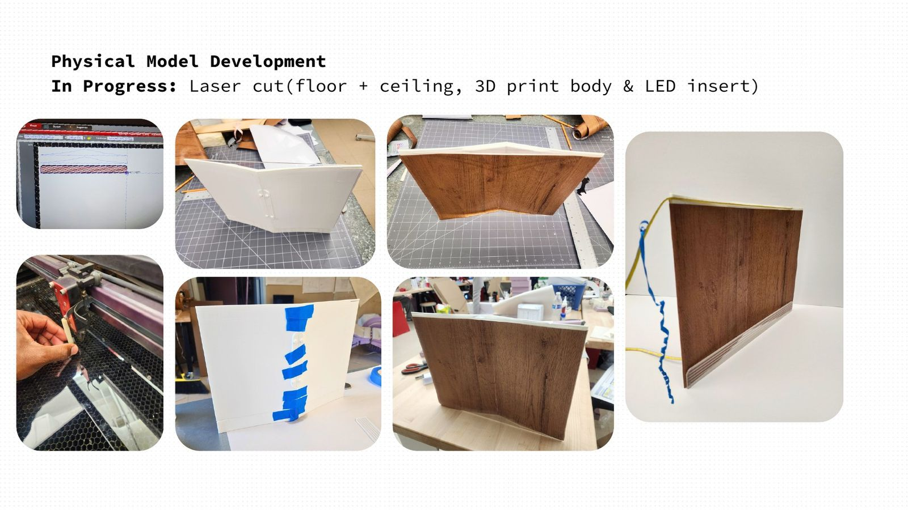
Physical model development: laser cutting, 3D printing, LED insert 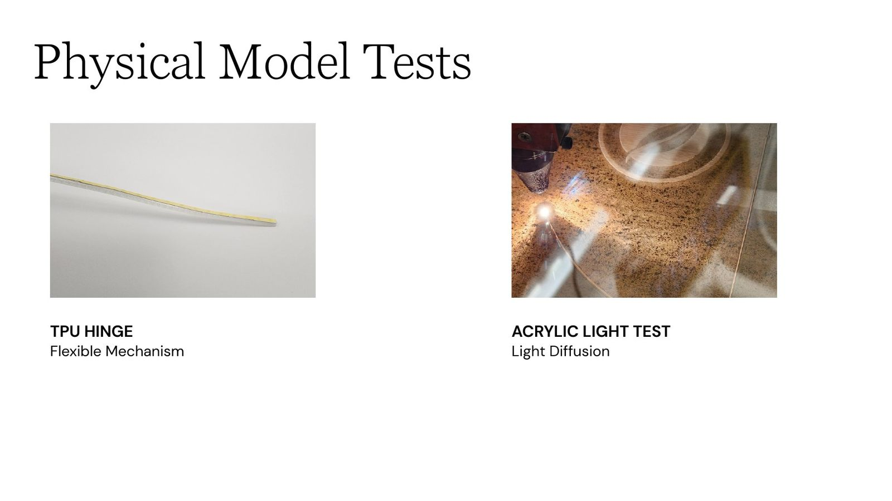
Physical tests: TPU hinge and acrylic light diffusion
Outcome
The final Zine Waller is a working, lit wall display that holds a magazine open and visible. The two changes that matter most, top loading and a form that shows you where the magazine goes, came directly from watching people use the prototype.
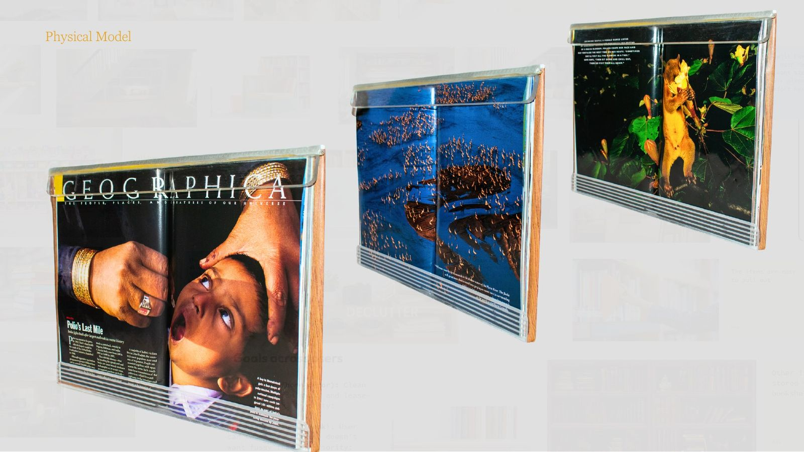
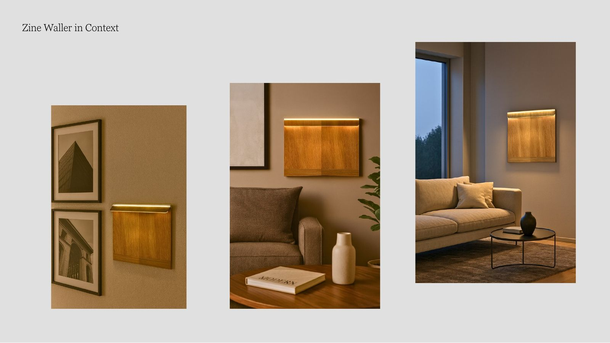